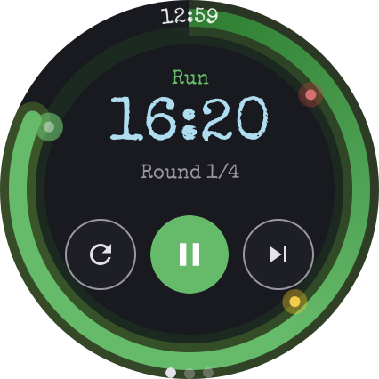
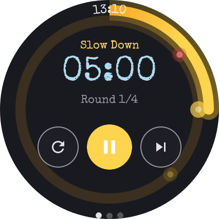
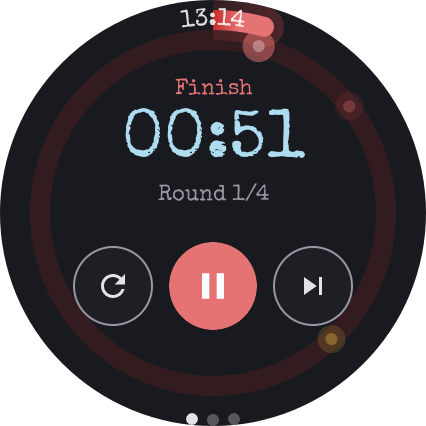
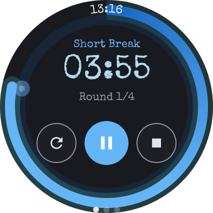
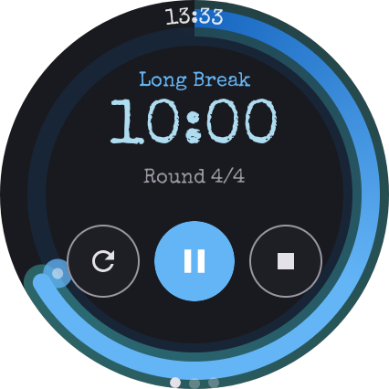
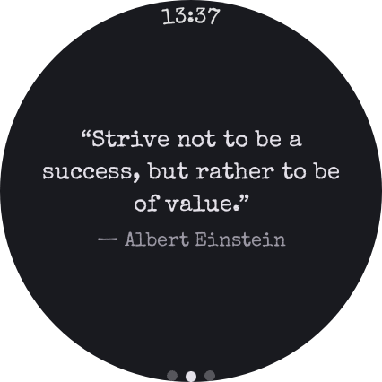
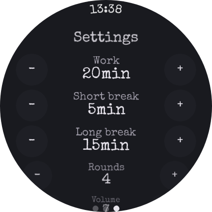
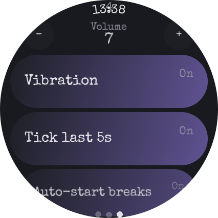

Lumina Chronos
A standalone Pomodoro timer for Wear OS. Lives on your wrist — no phone, no network, no account.
What it does
- Color-band cues — the progress ring shifts green → yellow → red so you can read your state in a glance.
- Final-5-second ticks — audible countdown so you can hear sessions end with the screen off.
- Ambient persistence — the timer stays visible in low-power mode when your wrist drops.
- Pause & Resume from the notification — control sessions without opening the app.
- Configurable — work, short break, long break, rounds, volume, vibration, auto-start, tick.
Screenshots

Run — color-band cues 
Slow Down phase 
Finish — final ticks 
Short break 
Long break 
Break quote 
Settings — durations 
Settings — audio
Requirements
- Wear OS 3 or newer (Android API 30+)
- Watch with a vibration motor recommended
Privacy
No data is collected. No network requests. All settings are stored locally on the watch. Read the full privacy policy.